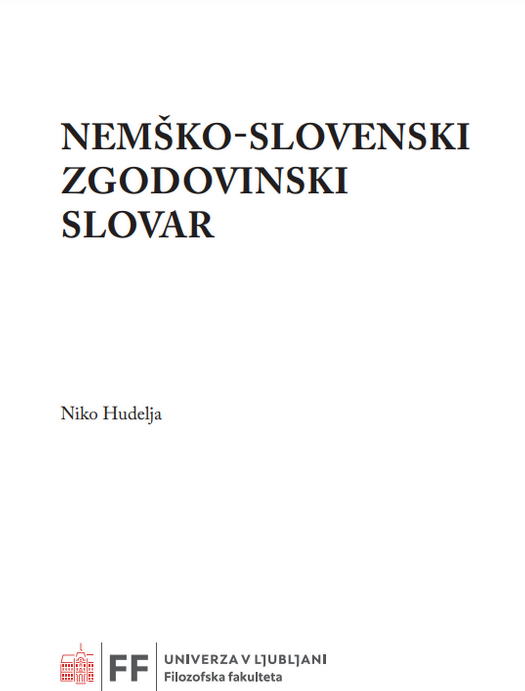

1Pri Znanstveni založbi Filozofske fakultete Univerze v Ljubljani je bila letos izdana prva elektronska verzija Nemško-slovenskega zgodovinskega slovarja. Avtor, lektor mag. Niko Hudelja, je leta 2016 pri Znanstveni založbi Filozofske fakultete Univerze v Ljubljani v knjižni obliki izdal Nemško-slovenski zgodovinski slovar, ki je obsegal približno 40.000 gesel in podgesel. Tokratna izdaja istega avtorja je posodobljena z okrog 2800 novimi in okoli 1700 dopolnjenimi ali popravljenimi gesli v skupnem obsegu 1193 strani.
2V posodobljenem delu so še vedno ohranjene vse značilnosti geselskega članka, določene v izdaji iz leta 2016. Naj spomnimo, da je geselski sestavek tvorita dva oziroma trije razdelki, pri čemer ima poleg geselske besede posebno vlogo pomenski razdelek. Pomenske oblike so jasne, nazorne, razlagalne, dodana vrednost pa so relevantni primeri rabe, kolokacije, stalne besedne ali frazeološke zveze itd. Slovar opozarja na večpomenskost geselske besede ali homonimijo. Ob tem gre poudariti še dodatna pojasnila oziroma razlage, ki so lahko razširjene z določenimi stvarnimi enciklopedičnimi podatki. Dodatno vrednost delu gotovo dajeta izdaja v e-obliki in prost dostop na strani Univerze v Ljubljani (https://ebooks.uni-lj.si/ZalozbaUL) ter Digitalne knjižnice Slovenije (https://www.dlib.si/stream).
3Tudi v novi izdaji se je avtor soočal z določenimi težavami. Pri presoji o uvrstitvi posamezne besede v geslovnik za slovar, pri opredeljevanju pomenov in sopostavitvi slovenskih ustreznikov se je moral sprijazniti z dejstvom, da slovenski enojezični razlagalni slovar za področje zgodovine še ne obstaja in da strokovno izrazje posledično v marsikaterem primeru še ni poenoteno in tudi ne zbrano. V določeni meri težave izhajajo iz bistva zgodovinske znanosti. Ker je v njenem središču človek, njegovo žitje in bitje v preteklosti, sta za to znanstveno področje značilna izredna diferenciranost in veliko število pomožnih ved ter sorodnih disciplin. Vse to se odraža v jeziku zgodovinske znanosti, kjer je po eni strani težko začrtati jasno mejo med zgodovinsko terminologijo in strokovnimi izrazi politične, sociološke, pravne vede, po drugi strani pa med zgodovinsko terminologijo in splošnim besedjem. Ob tako obsežnem besediščnem korpusu, kot se izkazuje v raznoterih zgodovinskih besedilih in arhivskem gradivu, je seveda treba poudariti, da se pričujoči slovar osredotoča na relevantno besedišče preteklih treh stoletij, ob tem pa, sicer v sorazmerno manjši meri, zajema tudi besedišče starejših obdobij, ki je podrobneje upoštevano v posebnih slovarjih za posamezna obdobja oziroma ožja strokovna področja, denimo v Lexerjevem slovarju za srednji vek ali Babnikovem slovarju pravne terminologije.
4Dopolnitve v Nemško-slovenskem zgodovinskem slovarju se nanašajo na vse ravni slovarske obdelave in se odražajo v a) geslovniku (z vidika ožje zgodovinske terminologije, terminologije zgodovini sorodnih ved in tudi splošnega besedišča); b) pomenskem razdelku (v številnih primerih so registrirani dodatni pomeni in njim odgovarjajoči slovenski ustrezniki); c) dodatnih področnih pojasnilih, ki so za uporabnike v marsikaterem primeru koristna, zlasti zaradi razdrobljenosti podatkov v strokovni literaturi in posledično težji dostopnosti; d) primerih rabe, kjer so navedeni številni primeri, zlasti s specialnih področij, na primer uradniškega dopisovanja.
5Obsežen besediščni korpus preteklih treh stoletij, kot se izkazuje v raznoterih zgodovinskih besedilih in arhivskem gradivu, je v prvi vrsti namenjen zgodovinarjem, pa tudi predstavnikom številnih drugih strokovnih področij. Slovar namreč sledi zakonitostim zgodovinske znanosti, njene diferenciranosti in razvejenosti na številne pomožne vede in podobne discipline. Ker je težko začrtati jasno mejo med ožjo zgodovinsko terminologijo in strokovnimi izrazi politične, sociološke, pravne vede, po drugi strani pa med zgodovinsko terminologijo in splošnim jezikom, je avtor v slovar prevzel besedišče drugih disciplin (denimo pravno terminologijo, ker se ta redno pojavlja v arhivskem gradivu). V tem smislu je slovar torej interdisciplinarno zasnovan in ni namenjen zgolj poklicnim in ljubiteljskim zgodovinarjem ter arhivistom, temveč je tudi koristen pripomoček za vse, ki se zanimajo za slovensko-nemško kulturno dediščino.
6Niko Hudelja je po izidu slovarja v knjižni obliki leta 2016 nadaljeval z istimi pristopi in načinom delom, pri katerem se je še naprej posvetoval s strokovnjaki posameznih področij zgodovinske znanosti. Večino novih geselskih člankov tvorijo historizmi in arhaizmi, posebno pozornost je posvečal avstriacizmom in tistim besedam, katerih pomen se je sčasoma spremenil ali celo izgubil. Dejstvo je, da je do konca prve svetovne vojne med izobraženci prevladovala – sicer z avstrijskimi potezami obarvana – nemščina. V tem kontekstu gre ločevati med nemško in avstrijsko germanistiko, kar je razvidno tudi iz slovarja. Ta odkriva široko izrazoslovje in je temeljni pripomoček pri branju starejših zgodovinskih virov za študente in druge znanstvene raziskovalce in razlagalce zgodovinskega gradiva. Tako lahko na primer sodobni uporabnik v slovarju najde zaradi razvoja družbe izumrle besede, na primer izraze, ki se nanašajo na plemstvo (prežlahten – hochadelig, z odličnim spoštovanjem – hochachtungsvoll ali visokoroden – hochgeboren), hkrati pa tudi izraze, ki so v sodobnem nemškem jeziku sicer še v rabi, so pa v preteklosti nosili drugačen pomen.
7Vsebinsko razširjen Nemško-slovenski zgodovinski slovar Nika Hudelje je močno obogatil slovenski (znanstveni) knjižni trg. Ob dejstvu, da gre za prvi tako obsežen avtorski slovar zgodovinskih izrazov v slovenskem prostoru, ki posredno pomeni tudi ogromen prispevek k zgodovinski znanosti in zgodovini sorodnih znanosti, bo zaradi svoje širine zagotovo prišel prav tudi širšemu krogu uporabnikov s področij germanistike, prava, uprave itd. S spletno postavitvijo in prosto dostopnostjo bo delo omogočalo lažje in širše preučevanje slovenske narodne zgodovine ter kulture in posledično prispevalo k večji skrbi za ohranitev narodne dediščine.